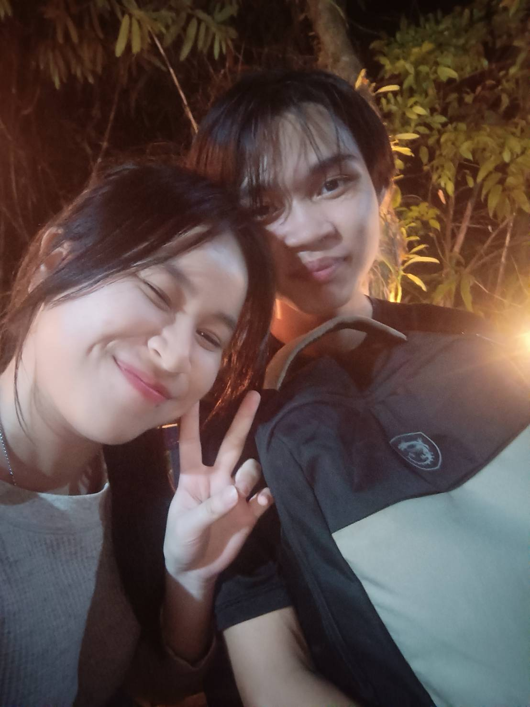
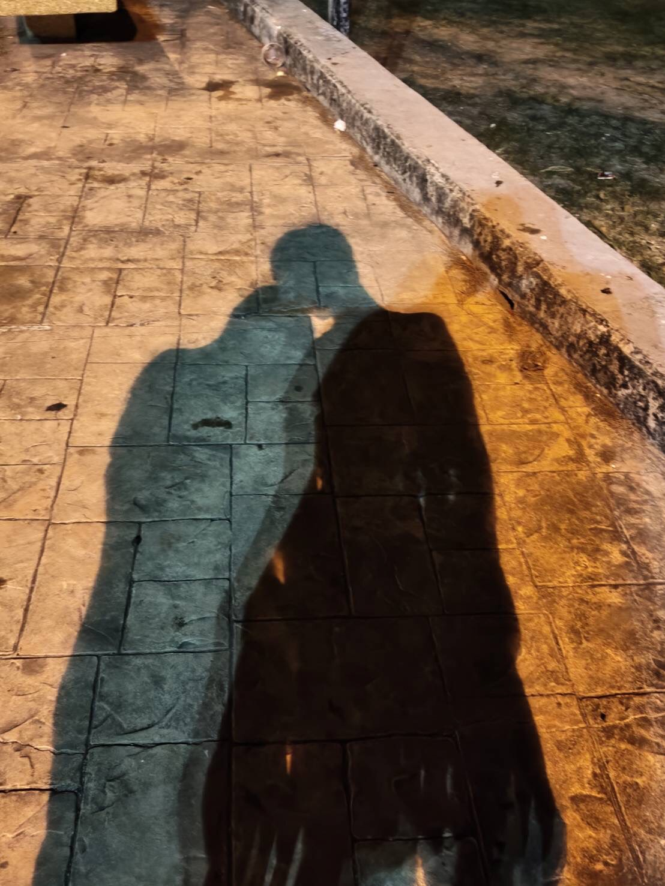
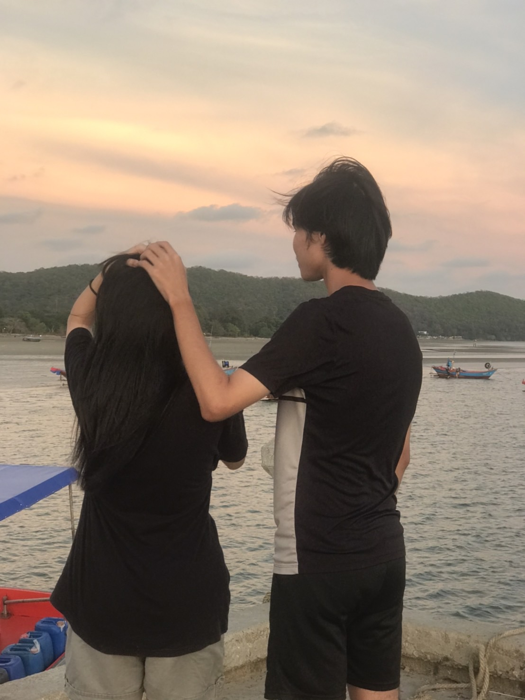

Happy 5 Months Anniversary นะ! 💖
ขอบคุณที่ยังอยู่ข้างกันเสมอนะ รู้สึกโชคดีที่มีเธอมากๆ
จะตั้งใจรักเธออย่างดีเลย เค้ารักเธอมากๆนะ
ขอให้เราอยู่ด้วยกันแบบนี้ไปนานๆ นะ ❤️
ขอบคุณที่ยังอยู่ข้างกันเสมอนะ รู้สึกโชคดีที่มีเธอมากๆ
จะตั้งใจรักเธออย่างดีเลย เค้ารักเธอมากๆนะ
ขอให้เราอยู่ด้วยกันแบบนี้ไปนานๆ นะ ❤️